Collection
일상에 스며드는
원목의 온기
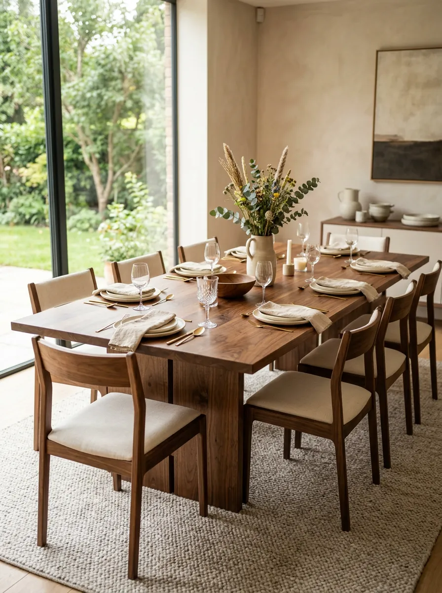
다이닝 테이블
Solid Walnut · 6–8인용
₩2,800,000~
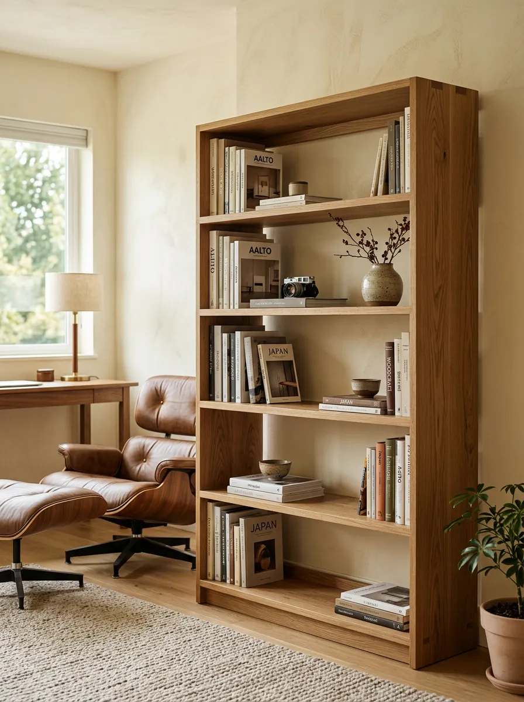
북셸프
White Oak · 5단
₩1,200,000
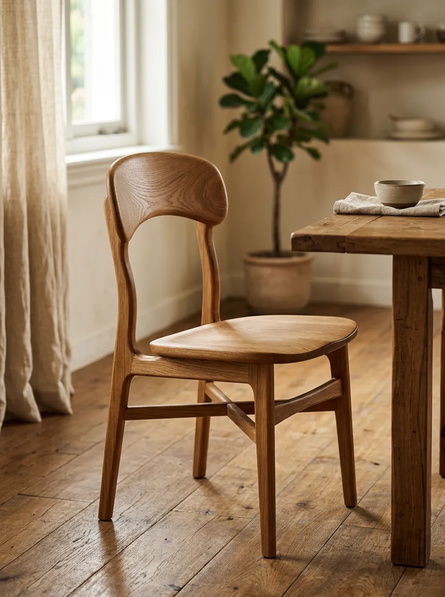
다이닝 체어
White Oak · 인체공학 설계
₩680,000
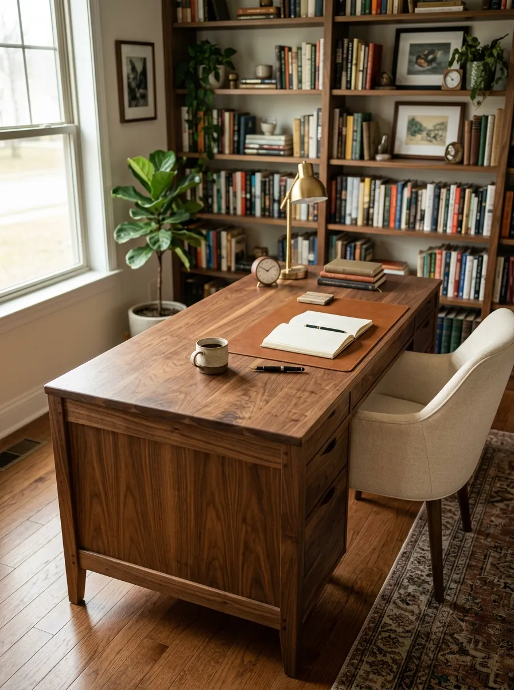
라이팅 데스크
Solid Walnut · 1400mm
₩1,800,000
Material Philosophy
나무가 가진
시간의 결
루미노 우드는 합판이나 베니어를 사용하지 않습니다.
솔리드 월넛과 화이트 오크만으로 가구를 만듭니다.
-
솔리드 월넛
북미산 블랙 월넛 원목, 최소 3년 건조
-
화이트 오크
유럽산 화이트 오크, 밝고 단단한 결
-
천연 오일 피니시
화학 도료 없이, 나무 결이 살아 숨 쉬는 마감
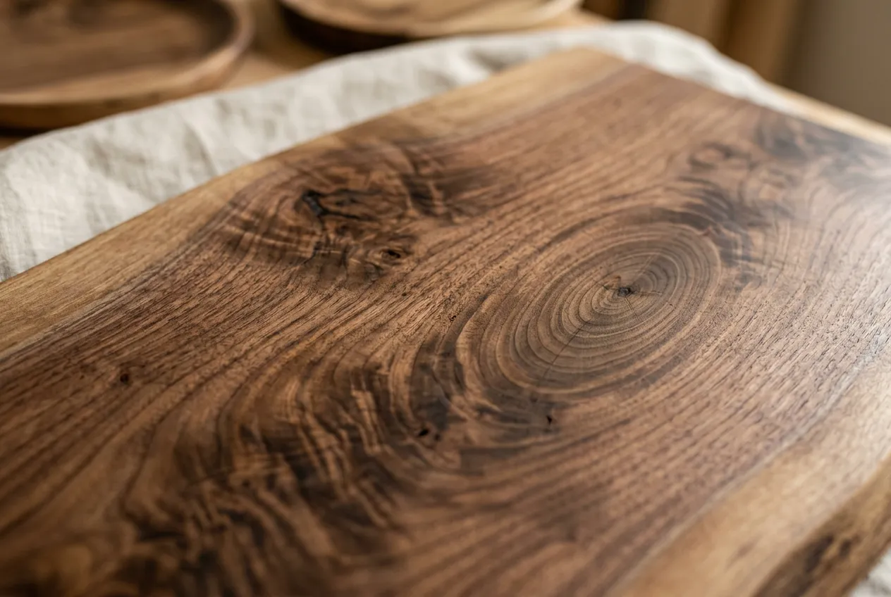
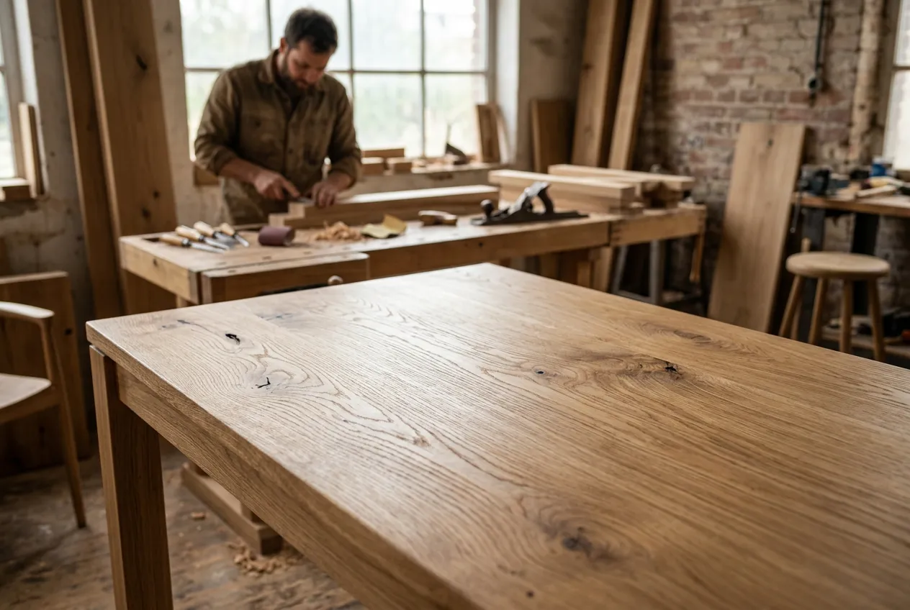
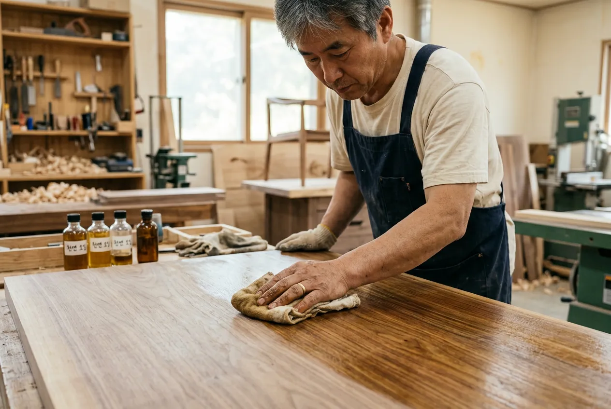
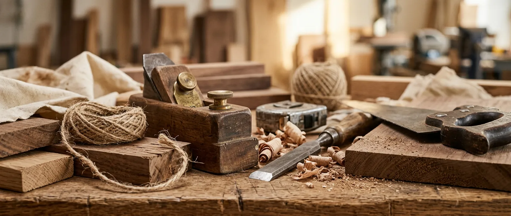
Workshop
손끝에서 태어나는
가구의 이야기
파주 헤이리의 작은 공방에서,
모든 가구는 한 사람의 장인이 처음부터 끝까지 만듭니다.
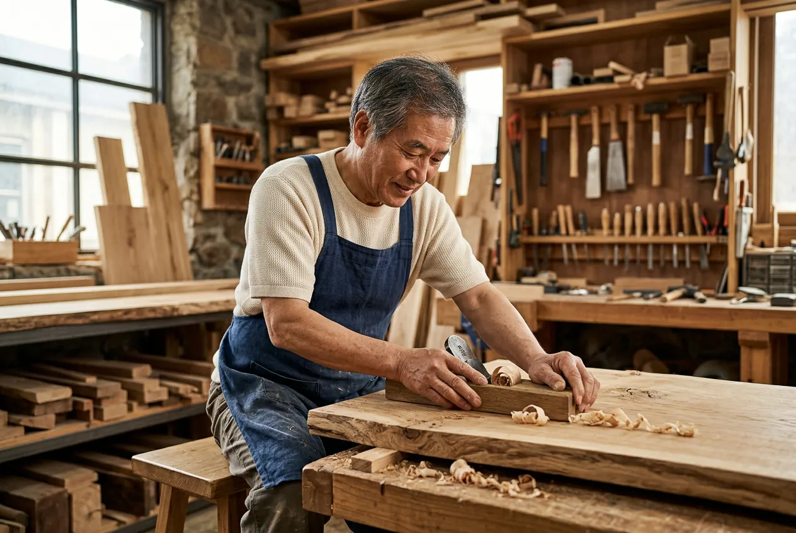
Craftsman
나무를 이해하는
사람의 손
강민호 장인은 스무 살에 처음 대패를 잡았습니다.
20년이 넘는 시간 동안 나무와 대화하며
쓰는 사람의 일상에 스며드는 가구를 만들어 왔습니다.
한국전통목공예 이수자
목공예 경력 22년, 도제식 전수
2019 대한민국 공예품대전 특선
Process
하나의 가구가
완성되기까지
01 상담
원하시는 가구의 용도, 공간, 스타일을 함께 이야기합니다. 쇼룸 방문 또는 온라인 상담 모두 가능합니다.
02 소재 선택
월넛, 화이트 오크 중 원하시는 수종을 선택하고, 직접 원목 샘플을 확인하실 수 있습니다.
03 도면 설계
공간 치수에 맞는 맞춤 도면을 제작합니다. 디자인 확정 후 제작에 들어갑니다.
04 수공 제작
장인이 직접 원목을 재단하고 조립합니다. 천연 오일 마감까지 4~6주 소요됩니다.
05 배송 · 설치
전문 운송팀이 가구를 안전하게 배송하고, 원하시는 위치에 직접 설치해 드립니다.
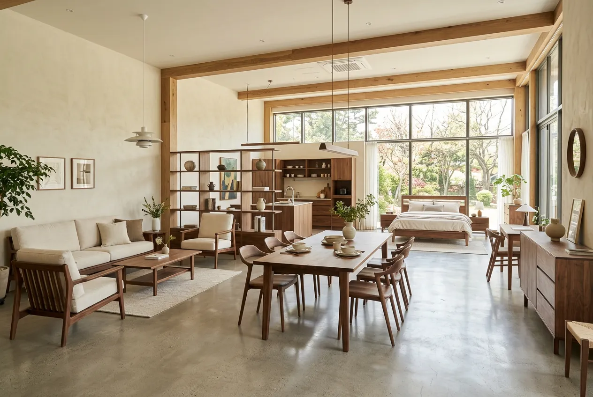
주소
경기도 파주시 탄현면 헤이리마을길 82-16
운영 시간
화–일 10:30–18:00 (월요일 휴무, 예약제)
연락처
031-942-7780 · info@luminowood.kr
In Your Space
가구가 놓이면
공간이 됩니다
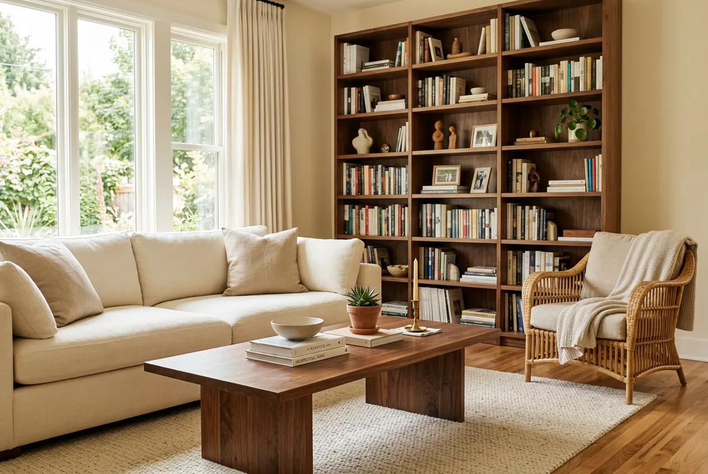
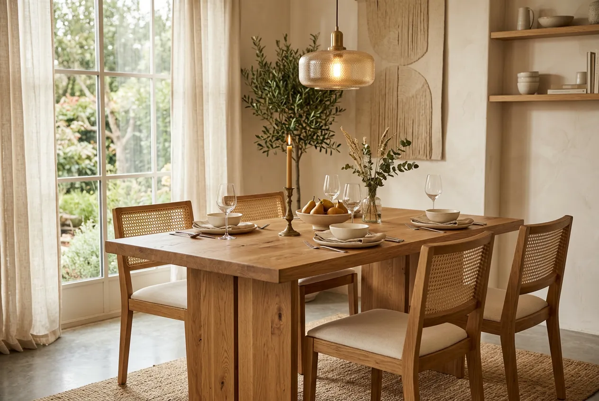
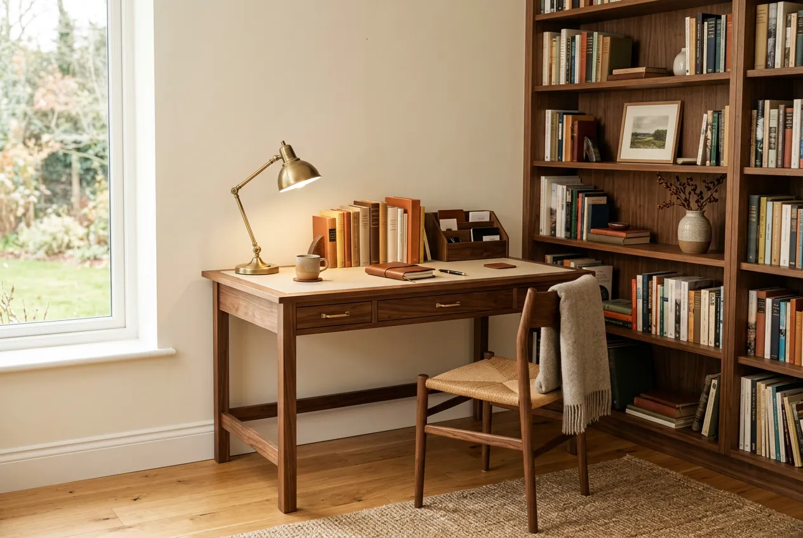
Testimonials
함께 만든 공간의
이야기
"이사하면서 다이닝 테이블을 맞췄는데, 3년이 지난 지금이 더 예뻐요. 나무 결이 점점 깊어지는 게 눈에 보입니다. 가족 모두 이 테이블을 제일 좋아합니다."
김서연
다이닝 테이블 · 월넛 6인용
"북셸프를 주문했는데, 상담부터 설치까지 정말 세심하더라고요. 공간에 딱 맞게 설계해주셔서 기성품에서 느낄 수 없는 만족감이 있습니다."
박준혁
북셸프 · 화이트 오크 5단
"사무실 데스크를 맞춤 제작했습니다. 매일 쓰는 물건인데 쓸수록 애착이 가요. 월넛 특유의 깊은 색감이 업무 공간의 분위기를 완전히 바꿔놓았습니다."
이하은
라이팅 데스크 · 월넛 1400mm